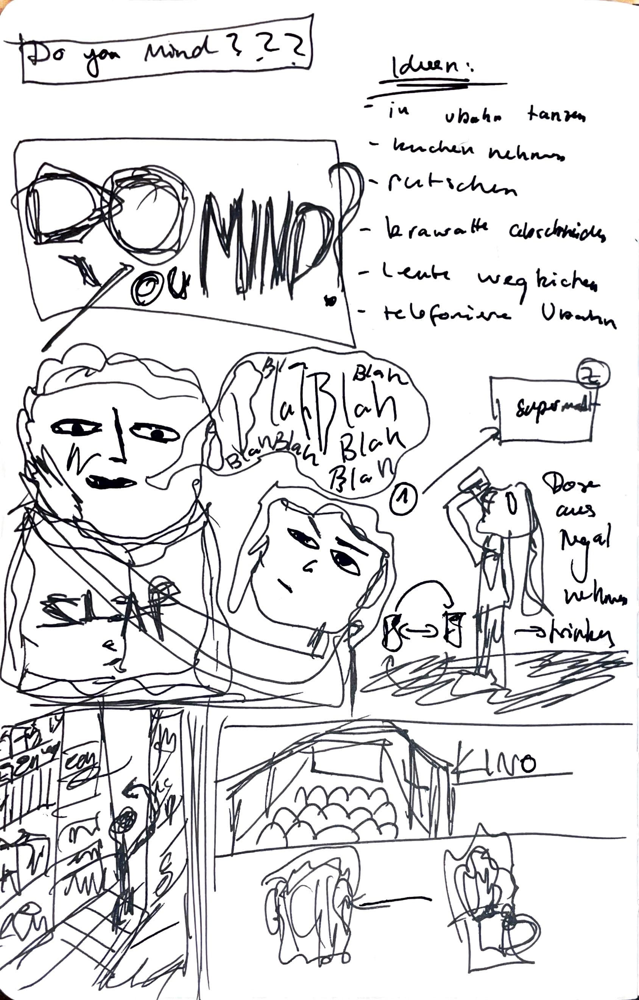
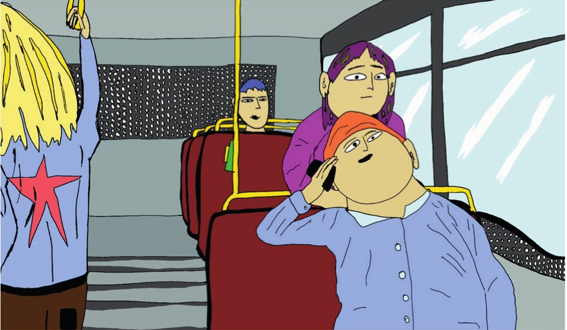
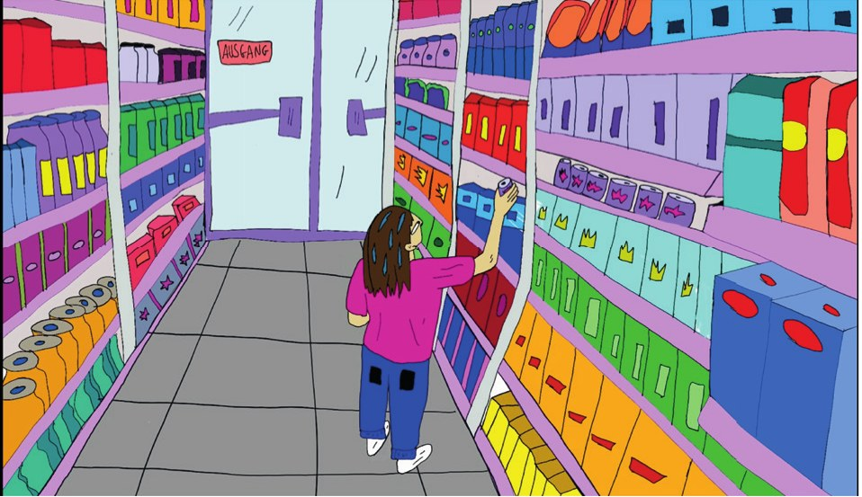
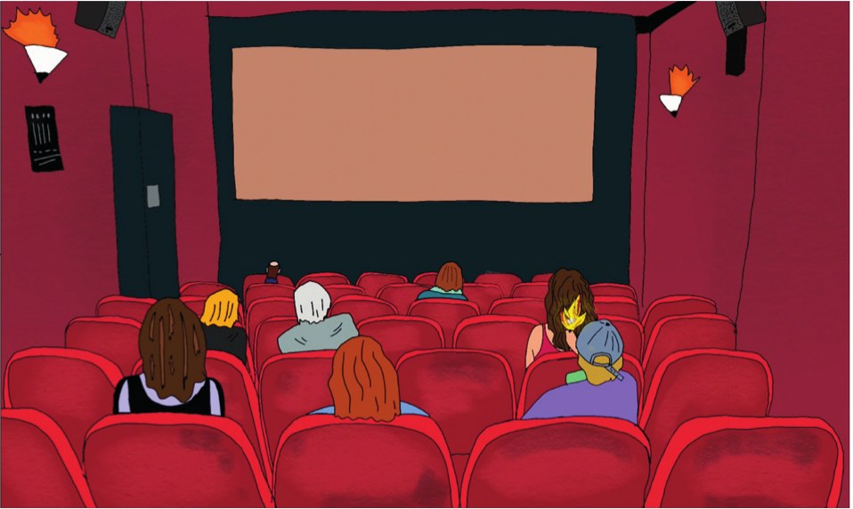
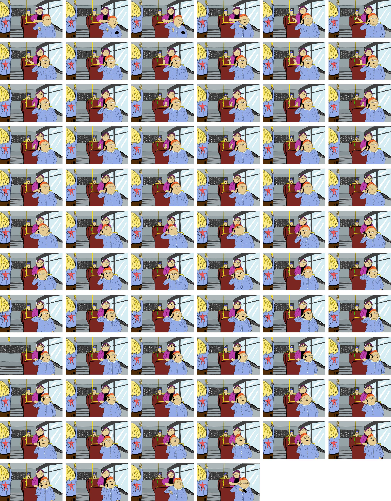

Idee
Jeder Mensch hat Impulse und Wünsche. Doch in einer Gesellschaft können wir nicht allem nachgeben. Es gibt Regeln und Grenzen. Manche sind geschrieben. Andere sind unausgesprochen.
Als Hintergrund diente Sigmund Freuds Buch „Das Unbehagen in der Kultur“. Freud beschreibt darin, dass Zusammenleben nur funktioniert, wenn wir unsere Triebe einschränken. Genau das erzeugt aber auch Unbehagen. Wie sollten wir uns also verhalten? Und wie viel Kontrolle ist nötig?

Konzept
Der Film besteht aus drei Szenen. Jede zeigt eine Situation, in der ein Impuls auf eine gesellschaftliche Regel trifft. Die Struktur ist offen angelegt. So lässt sich der Film beliebig um weitere Szenen erweitern.
Durch seine kurze und klare Form eignet sich der Film auch als Kampagnenfilm.



Umsetzung
Alle Szenen wurden Frame für Frame von Hand gezeichnet. Anschließend wurden sie digital zu einem Animationsfilm zusammengesetzt.
